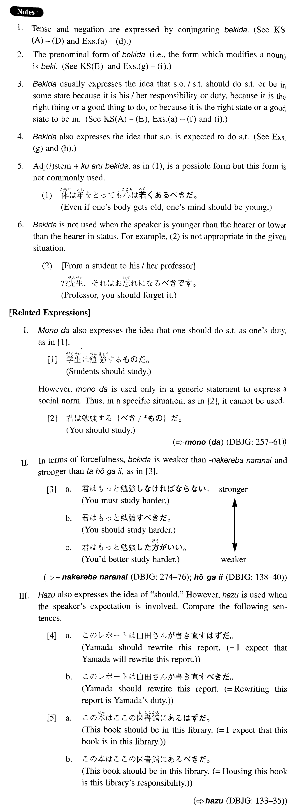

←
DoJG
→
べきだ
(I. 11)
Example sentences
(ksa).
この論文は書き直す
べきだ
。
This thesis should be rewritten.
(ksb).
そんなことを人に言う
べき
{
では
/
じゃ
}ありません。
You shouldn't say that kind of thing to people.
(ksc).
君も来る
べきでした
よ。
You should have come, too.
(ksd).
山田には話す
べき
{
では
/
じゃ
}なかった。
I shouldn't have told that to Yamada.
(kse).
話す
べき
ことは全部話しました。
I told you everything I should tell you.
(a).
自分のことは自分です（る）
べきだ
。
You should look after yourself. (literally: You should do your own business by yourself.)
(b).
今、家を買う
べきじゃない
よ。
You shouldn't buy a house now.
(c).
それは課長にも言っておく
べきだった
ね。
We should have told that to our boss, too, shouldn't we?
(d).
彼は結婚なんかす（る）
べきじゃなかった
んだ。
He shouldn't have married.
(e).
我々はもっと創造的である
べきだ
。
We should be more creative.
(f).
この状態が現実である
べきだ
。
This state should be the reality.
(g).
調査の結果、驚く
べき
ことが分かった。
As a result of the investigation, a surprising thing (literally: something one should be surprised at) was discovered.
(h).
田中は全く軽蔑す
べき
男
だ。
Tanaka is indeed a despicable man (literally: a man whom one should despise).
(i).
ある
べき
所に記述がない。
There's no description where there should be one.
Formation
(i)
Vinformal nonpast
べきだ
行く
べきだ
Should go
Exception
する
→{
す
/
する
}
べきだ
Should do
(ii)
{Adjective な stem/Noun}
であるべきだ
積極的
であるべきだ
Someone should be positive
目的
であるべきだ
Something should be an objective
